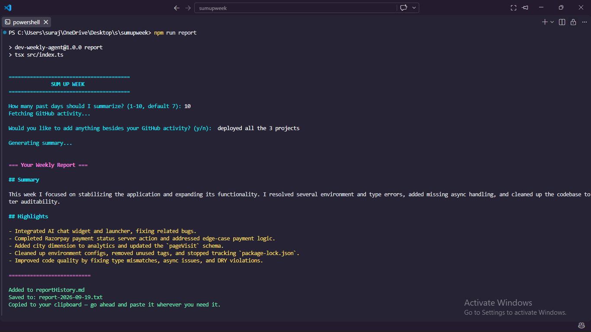
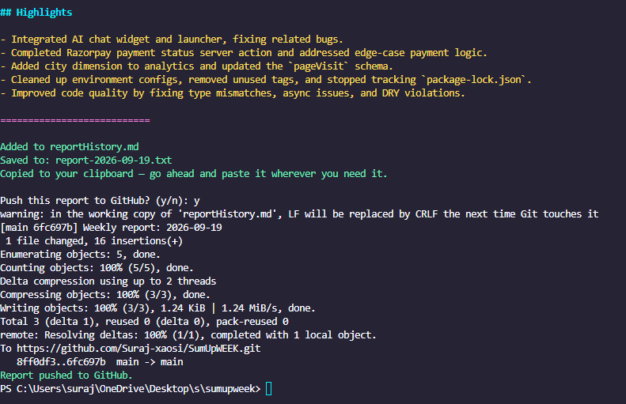

Sum Up Week
A small, personal CLI that turns a week of GitHub activity into a polished developer update. It combines commits, pull requests, closed issues, and the work that never made it into GitHub, then gives the result back in a format ready to paste.

The challenge
Weekly updates usually require reconstructing a scattered work log from commit history, pull requests, issues, and memory. I wanted that ritual to take minutes without turning the result into a generic AI summary or sending personal credentials through another service.
What I built
- A guided terminal flow that lets the user choose a reporting window from one to ten days and add manual bullets for work that GitHub cannot see.
- Parallel GitHub API queries for commits, pull requests, and closed issues, with soft failure so one unavailable source does not discard the rest of the report.
- A focused Groq prompt that produces a short Markdown summary with a Summary section and concrete Highlights instead of inventing activity or padding a quiet week.
- Optional voice examples so the report can match the author's tone while keeping the week's real activity as its only source of content.
- A second reflection pass that checks for leaked example content, robotic tone, and accidental team language before returning the final draft.
- Local output that writes a dated text file, prepends the latest report to Markdown history, copies it to the clipboard, and optionally commits and pushes that history to GitHub.
Pipeline direction
Project notes
The tool runs on the developer's machine. GitHub and Groq are called directly with credentials loaded from a local environment file, while generated reports stay in the project's own history. The setup is intentionally small: install dependencies, add the two API credentials and username, then run one command.
